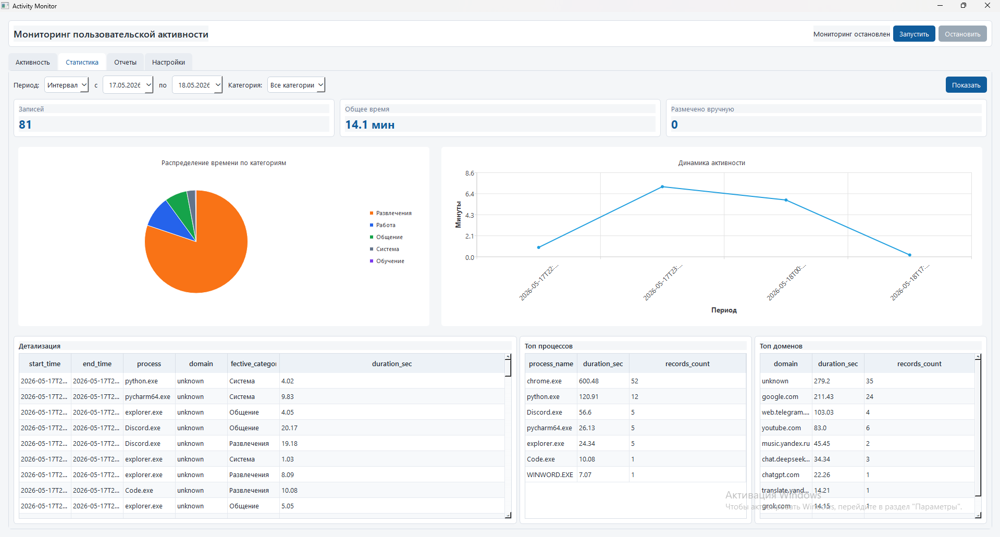
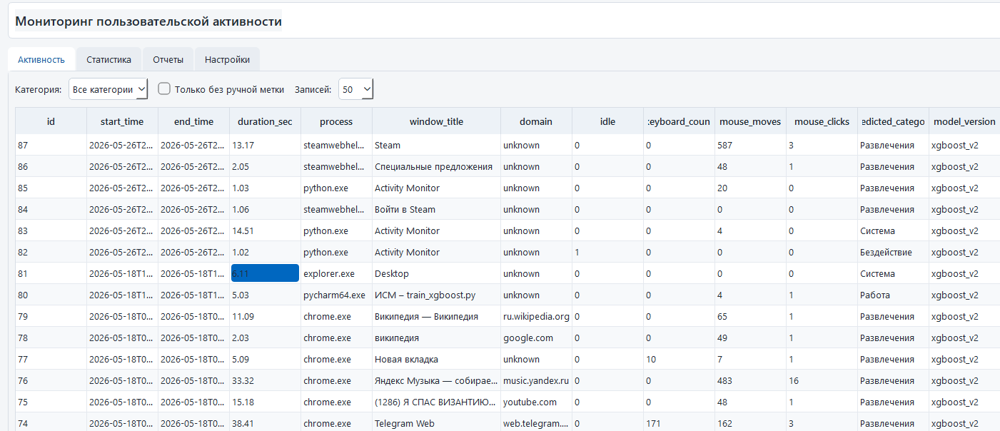
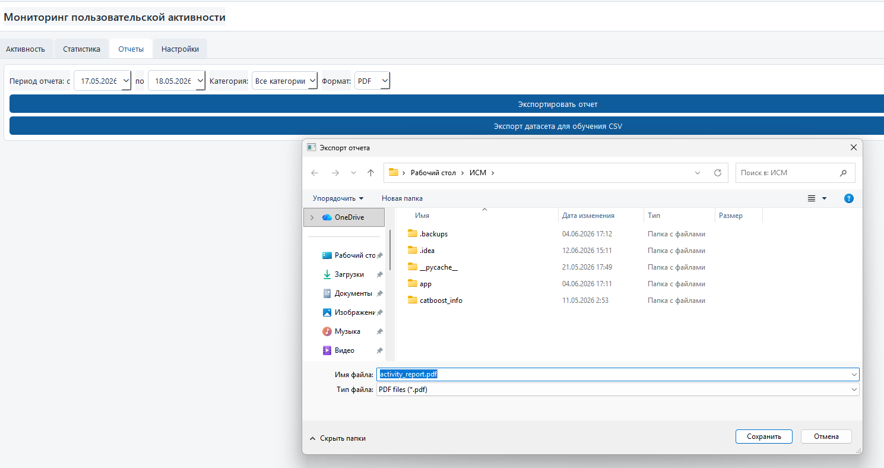

Собирает контекст
Фиксирует активное окно, процесс, домен браузера, длительность и признаки активности клавиатуры и мыши.
Локальный мониторинг активности
Программа автоматически фиксирует активные приложения и сайты, относит действия к категориям и показывает понятную статистику. Без жёстких блокировок и ручного ведения дневника.
Учебная версия для Windows. Публичная загрузка пока не подключена.
Время по категориям
6 ч 42 мин за компьютеромЗнакомая ситуация
Проблема часто становится заметна только вечером. Activity Monitor собирает факты в фоне и помогает увидеть длительные перерывы, переключения между приложениями и распределение времени по категориям.
Как работает система
Фиксирует активное окно, процесс, домен браузера, длительность и признаки активности клавиатуры и мыши.
Модель XGBoost относит запись к работе, обучению, общению, развлечениям, системе или бездействию.
Строит распределение времени, динамику по периоду, топ процессов и доменов. Ошибочную категорию можно исправить.
Интерактивная демонстрация
Данные ниже демонстрационные. Переключайте период и категорию: каждое действие уже подготовлено для последующего анализа в GA4.
Самый длинный развлекательный период начался после 17:00. Мягкое напоминание могло бы обозначить точку возврата.
Реальная программа
Скриншоты взяты из реализованной версии дипломного проекта.



Контроль данных
Приложение использует локальную базу SQLite. Сбор можно остановить в любой момент, категории и параметры мониторинга доступны в настройках, а отчёт экспортируется только по команде пользователя.
Зачем отдельная система
Осознанный контроль без запретов